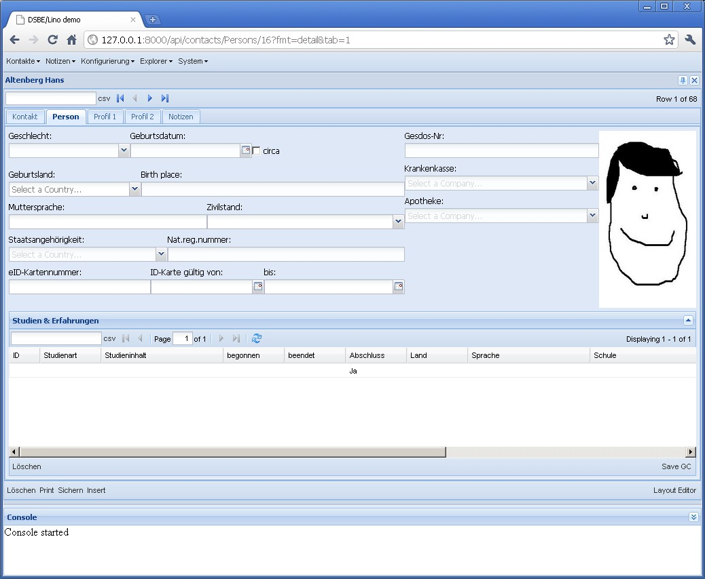

20101004¶
Also hier einige Layout-Bugs, die ich jetzt mal bearbeiten will, weil sie momentan schön sichtbar sind im Detail von dsbe.Persons:
- “Studien & Erfahrungen” im Tab Person lässt sich höhenverstellen, aber “AG-Sperren” in “Profil 1” nicht. Die hbox mit dem Bild hat anfangs immer die falsche Höhe.
- Im Tab Kontakt fehlen die flags, die ich noch zwischen remarks und coaching knallen will. Zumindest will ich mal sehen, wie sich das macht. Aber wenn ich das tue, ist die ganze untere hbox nicht mehr da.
- Im Tab Kontakt , box “coaching” nimmt die Grid zu viel Platz ein. Da hat Lino unnötigerweise einen VBorderPanel benutzt. Das ist nicht nötig, wenn nur ein Element vflex ist.
- Im Tab Person nimmt die Grid zu viel Höhe.
- Im Detail-Tab “Profil 1” nimmt das GridElement anfangs den ganzen Raum ein, die Felder im oberen Teil werden erst nach einem resize sichtbar.
Na schauen wir uns das Person-Tab mal genauer an. Hier die Layout-Beschreibung:
main =
box1:40 box2:20 image:30
dsbe.StudiesByPerson
box1 =
sex:8 birth_date birth_date_circa
birth_country birth_place
native_language civil_state
nationality national_id:15
card_number:10 card_valid_from card_valid_until:10
box2 =
gesdos_id
health_insurance
pharmacy
So sieht es aus:
{kind=link}
Problem ist, dass box1 anfangs nicht sichtbar ist (Höhe 0 hat).
Jetzt schauen wir uns mal einige Auszüge aus dem generierten JS-Code an. Also box1 und box2 sind zwei Container mit layout “form”:
var box1_panel285 = new Ext.Container({
flex: 57, layout: "form",
items: [box1_1_panel262, box1_2_panel267, box1_3_panel272, box1_4_panel277, box1_5_panel284],
});
var box2_panel292 = new Ext.Container({
flex: 28, layout: "form",
items: [gesdos_id_ct_panel287, health_insurance_ct_panel289, pharmacy_ct_panel291],
});
Dann das Bild:
var image293 = new Ext.BoxComponent({
flex: 14,
style: { cursor: "pointer", height: "100%" },
autoEl: { tag: "img" },
plugins: Lino.PictureBoxPlugin
});
Diese drei kommen in eine hbox main_1 (der Name bedeutet, dass es die erste Zeile im Element main ist):
var main_1_panel294 = new Ext.Container({
layout: "hbox",
split: true,
items: [box1_panel285, box2_panel292, image293],
region: "north",
layoutConfig: { align: "stretch" },
});
Dann die Grid:
var dsbe_StudiesByPerson_grid307 = new Lino.GridPanel({
flex: 66,
title: "Studien & Erfahrungen",
region: "center",
split: true,
...
});
Und diese beiden kommen in ein VBorderPanel:
var main_panel308 = new Lino.VBorderPanel({
title: "Person",
autoScroll: true,
items: [main_1_panel294, dsbe_StudiesByPerson_grid307],
frame: true,
border: false,
bodyBorder: false,
labelAlign: "top"
});
Frage der Woche: wo ist der Fehler?
05.10. und 06.10. : Arbeiten an /extjs-showcases/20101005.html.
06.10., 15 Uhr: Tilt! Eine hbox, die ein vflex-Element enthält (also die main_1 im Beispiel) muss für layoutConfig.align nicht stretch sondern stretchmax haben. Eigentlich müssen alle hboxen, deren autoHeight=true ist und die eine form enthalten (für die das autoHeight ja gedacht ist), stretchmax statt stretch verwenden.
Das Passfoto habe ich nach Profil 1 versetzt, wo es m.E. am besten hinpasst.
Alle oben genannten Probleme sind jetzt gelöst. Ein Problem ist hinzugekommen oder offensichtlicher geworden: einige Details funktionieren nur, wenn sie über den Permalink aufgerufen werden. Also wenn man über den Button hinklickt, sind Fehler. Der Permalink-Button ist dafür kein zufriedenstellender Workaround, weil bei dessen Verwendung die Historie verloren geht. Habe schon einen neuen Tool-Button “refresh” hingeklebt, der momentan main_item.doLayout() macht. Aber das hat leider auch keinen Effekt.